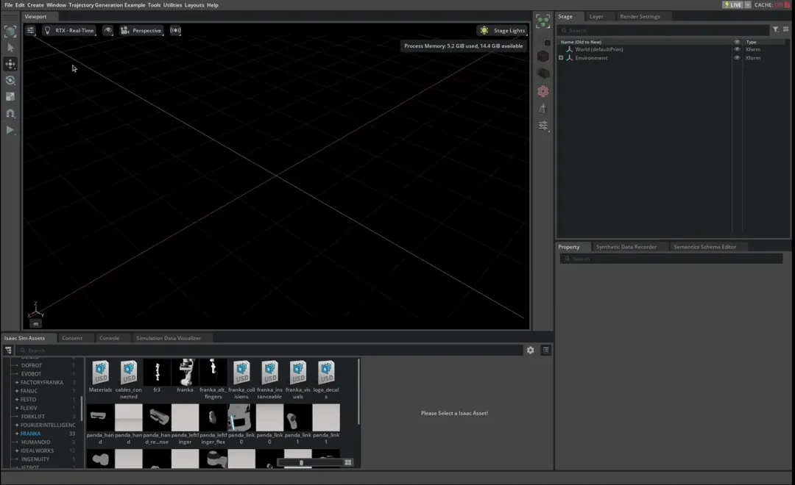

Lula Trajectory Generator#
Deprecated
새로운 개발을 위해서는 Lula보다 개선된 인터페이스와 추가 기능을 제공하는 최신 Robot Motion (Experimental) API 사용을 권장합니다.
이 튜토리얼은 Motion Generation 익스텐션의 Lula Trajectory Generator를 사용하여 시뮬레이션된 로봇 Articulation에 쉽게 적용할 수 있는 작업 공간 및 c-공간 궤적을 생성하는 방법을 탐구합니다.
Getting Started#
Prerequisites
이 튜토리얼을 시작하기 전에 매니퓰레이터 로봇 추가 튜토리얼을 완료하세요.
Lula Robot Description and XRDF Editor를 참조하면 지원되지 않는 로봇에서 Lula Trajectory Generator를 사용할 수 있도록 자체
robot_description.yaml파일을 생성하는 방법을 이해할 수 있습니다.이 튜토리얼의 구조와 실행 방법을 이해하려면 Loaded Scenario Extension Template을 검토하세요.
튜토리얼을 따라 하려면 Isaac Sim 6.0 인스턴스를 실행하세요. 그런 다음 Window > Extensions를 열고 Motion Generation Examples (isaacsim.robot_motion.motion_generation.examples)를 검색하여 활성화하세요. 찾을 수 없으면 Extensions 검색창에서 @feature를 제거하고 다시 검색하세요.
isaacsim.robot_motion.motion_generation.examples 익스텐션 내에 지정된 c-공간 및 작업 공간 포인트를 연결하는 궤적을 생성하는 데 LulaTaskSpaceTrajectorygenerator와 LulaCSpaceTrajectoryGenerator를 사용하는 예제가 있습니다.
이 튜토리얼의 섹션들은 기본 기능에서 완성된 코드까지 scenario.py 파일을 단계별로 구성합니다.
Note
Motion Generation Examples (isaacsim.robot_motion.motion_generation.examples)는 Isaac Sim 6.0.0부터 지원이 중단되었습니다. Isaac Sim 소스 저장소에서는 source/deprecated/isaacsim.robot_motion.motion_generation.examples 아래에 있으며 익스텐션 ID는 변경되지 않았습니다.
대안: isaacsim.robot_motion.cumotion.examples 익스텐션과 cuMotion Integration 튜토리얼을 사용하세요.

Generating a C-Space Trajectory#
LulaCSpaceTrajectoryGenerator 클래스는 제공된 c-공간 웨이포인트 세트를 연결하는 궤적을 생성할 수 있습니다. 아래 코드 스니펫은 적절한 구성 파일이 주어졌을 때 LulaCSpaceTrajectoryGenerator 클래스를 초기화하고 원하는 궤적을 생성하기 위해 각 프레임에서 설정할 수 있는 ArticulationAction 시퀀스를 만드는 데 사용하는 방법을 보여줍니다.
아래 코드 스니펫은 제공된 예제의 /Trajectory_Generator_python/scenario.py의 관련 내용을 보여줍니다.
1import os
2
3import carb
4import lula
5import numpy as np
6from isaacsim.core.api.objects.cuboid import FixedCuboid
7from isaacsim.core.prims import SingleArticulation as Articulation
8from isaacsim.core.prims import SingleXFormPrim as XFormPrim
9from isaacsim.core.utils.extensions import get_extension_path_from_name
10from isaacsim.core.utils.numpy.rotations import rot_matrices_to_quats
11from isaacsim.core.utils.prims import delete_prim, get_prim_at_path
12from isaacsim.core.utils.stage import add_reference_to_stage
13from isaacsim.robot_motion.motion_generation import (
14 ArticulationTrajectory,
15 LulaCSpaceTrajectoryGenerator,
16 LulaKinematicsSolver,
17 LulaTaskSpaceTrajectoryGenerator,
18)
19from isaacsim.storage.native import get_assets_root_path
20
21
22class UR10TrajectoryGenerationExample:
23 def __init__(self):
24 self._c_space_trajectory_generator = None
25 self._taskspace_trajectory_generator = None
26 self._kinematics_solver = None
27
28 self._action_sequence = []
29 self._action_sequence_index = 0
30
31 self._articulation = None
32
33 def load_example_assets(self):
34 # Add the Franka and target to the stage
35 # The position in which things are loaded is also the position in which they
36
37 robot_prim_path = "/ur10"
38 path_to_robot_usd = get_assets_root_path() + "/Isaac/Robots/UniversalRobots/ur10/ur10.usd"
39
40 add_reference_to_stage(path_to_robot_usd, robot_prim_path)
41 self._articulation = Articulation(robot_prim_path)
42
43 # Return assets that were added to the stage so that they can be registered with the core.World
44 return [self._articulation]
45
46 def setup(self):
47 # Config files for supported robots are stored in the motion_generation extension under "/motion_policy_configs"
48 mg_extension_path = get_extension_path_from_name("isaacsim.robot_motion.motion_generation")
49 rmp_config_dir = os.path.join(mg_extension_path, "motion_policy_configs")
50
51 # -- Begin LulaCSpaceTrajectoryGenerator -- #
52 # Initialize a LulaCSpaceTrajectoryGenerator object
53 self._c_space_trajectory_generator = LulaCSpaceTrajectoryGenerator(
54 robot_description_path=rmp_config_dir + "/universal_robots/ur10/rmpflow/ur10_robot_description.yaml",
55 urdf_path=rmp_config_dir + "/universal_robots/ur10/ur10_robot.urdf",
56 )
57 # -- End of LulaCSpaceTrajectoryGenerator -- #
58
59 self._taskspace_trajectory_generator = LulaTaskSpaceTrajectoryGenerator(
60 robot_description_path=rmp_config_dir + "/universal_robots/ur10/rmpflow/ur10_robot_description.yaml",
61 urdf_path=rmp_config_dir + "/universal_robots/ur10/ur10_robot.urdf",
62 )
63
64 self._kinematics_solver = LulaKinematicsSolver(
65 robot_description_path=rmp_config_dir + "/universal_robots/ur10/rmpflow/ur10_robot_description.yaml",
66 urdf_path=rmp_config_dir + "/universal_robots/ur10/ur10_robot.urdf",
67 )
68
69 self._end_effector_name = "ee_link"
70
71 def setup_cspace_trajectory(self):
72 c_space_points = np.array(
73 [
74 [
75 -0.41,
76 0.5,
77 -2.36,
78 -1.28,
79 5.13,
80 -4.71,
81 ],
82 [
83 -1.43,
84 1.0,
85 -2.58,
86 -1.53,
87 6.0,
88 -4.74,
89 ],
90 [
91 -2.83,
92 0.34,
93 -2.11,
94 -1.38,
95 1.26,
96 -4.71,
97 ],
98 [
99 -0.41,
100 0.5,
101 -2.36,
102 -1.28,
103 5.13,
104 -4.71,
105 ],
106 ]
107 )
108
109 # -- Begin time optimal -- #
110 trajectory_time_optimal = self._c_space_trajectory_generator.compute_c_space_trajectory(c_space_points)
111 # -- End of time optimal -- #
112 # -- Begin time stamped -- #
113 timestamps = np.array([0, 5, 10, 13])
114 trajectory_timestamped = self._c_space_trajectory_generator.compute_timestamped_c_space_trajectory(
115 c_space_points, timestamps
116 )
117 # -- End of time stamped -- #
118
119 # -- Begin visualization -- #
120 # Visualize c-space targets in task space
121 for i, point in enumerate(c_space_points):
122 position, rotation = self._kinematics_solver.compute_forward_kinematics(self._end_effector_name, point)
123 add_reference_to_stage(
124 get_assets_root_path() + "/Isaac/Props/UIElements/frame_prim.usd", f"/visualized_frames/target_{i}"
125 )
126 frame = XFormPrim(f"/visualized_frames/target_{i}", scale=[0.04, 0.04, 0.04])
127 frame.set_world_pose(position, rot_matrices_to_quats(rotation))
128 # -- End of visualization -- #
129
130 # -- Begin no trajectory handling -- #
131 if trajectory_time_optimal is None or trajectory_timestamped is None:
132 carb.log_warn("No trajectory could be computed")
133 self._action_sequence = []
134 # -- End of no trajectory handling -- #
135 else:
136 physics_dt = 1 / 60
137 self._action_sequence = []
138
139 # -- Begin trajectory following -- #
140 # Follow both trajectories in a row
141 articulation_trajectory_time_optimal = ArticulationTrajectory(
142 self._articulation, trajectory_time_optimal, physics_dt
143 )
144 self._action_sequence.extend(articulation_trajectory_time_optimal.get_action_sequence())
145
146 articulation_trajectory_timestamped = ArticulationTrajectory(
147 self._articulation, trajectory_timestamped, physics_dt
148 )
149 self._action_sequence.extend(articulation_trajectory_timestamped.get_action_sequence())
150 # -- End of trajectory following -- #
151
152 def update(self, step: float):
153 if len(self._action_sequence) == 0:
154 return
155
156 if self._action_sequence_index >= len(self._action_sequence):
157 self._action_sequence_index += 1
158 self._action_sequence_index %= (
159 len(self._action_sequence) + 10
160 ) # Wait 10 frames before repeating trajectories
161 return
162
163 if self._action_sequence_index == 0:
164 self._teleport_robot_to_position(self._action_sequence[0])
165
166 self._articulation.apply_action(self._action_sequence[self._action_sequence_index])
167
168 self._action_sequence_index += 1
169 self._action_sequence_index %= len(self._action_sequence) + 10 # Wait 10 frames before repeating trajectories
170
171 def reset(self):
172 # Delete any visualized frames
173 if get_prim_at_path("/visualized_frames"):
174 delete_prim("/visualized_frames")
175
176 self._action_sequence = []
177 self._action_sequence_index = 0
178
179 def _teleport_robot_to_position(self, articulation_action):
180 initial_positions = np.zeros(self._articulation.num_dof)
181 initial_positions[articulation_action.joint_indices] = articulation_action.joint_positions
182
183 self._articulation.set_joint_positions(initial_positions)
184 self._articulation.set_joint_velocities(np.zeros_like(initial_positions))
LulaCSpaceTrajectoryGenerator 클래스는 URDF와 Lula Robot Description File을 사용하여 초기화됩니다:
1 # Initialize a LulaCSpaceTrajectoryGenerator object
2 self._c_space_trajectory_generator = LulaCSpaceTrajectoryGenerator(
3 robot_description_path=rmp_config_dir + "/universal_robots/ur10/rmpflow/ur10_robot_description.yaml",
4 urdf_path=rmp_config_dir + "/universal_robots/ur10/ur10_robot.urdf",
5 )
LulaCSpaceTrajectoryGenerator는 일련의 웨이포인트를 받아 스플라인 기반 보간을 사용하여 구성 공간에서 연결합니다. 궤적 생성기가 충족할 수 있는 두 가지 주요 목표가 있습니다:
시간 최적화
타임스탬프
제공된 예제는 빠르게 실행된 후 느리게 실행되는 궤적을 보여줍니다.
Trajectory Interface를 충족하는 LulaTrajectory 객체 형태로 시간 최적화 궤적이 생성됩니다:
1 trajectory_time_optimal = self._c_space_trajectory_generator.compute_c_space_trajectory(c_space_points)
다음으로, [0,5,10,13]초에 동일한 웨이포인트를 통과하는 타임스탬프 궤적이 생성됩니다. 시간 최적성은 궤적 전체에서 속도, 가속도 또는 저크 한계 중 하나 이상을 포화시키는 것으로 정의됩니다:
1 timestamps = np.array([0, 5, 10, 13])
2 trajectory_timestamped = self._c_space_trajectory_generator.compute_timestamped_c_space_trajectory(
3 c_space_points, timestamps
4 )
이 LulaTrajectory 객체들은 ArticulationTrajectory에 전달되어 로봇 Articulation에 직접 전달할 수 있는 ArticulationAction 시퀀스를 생성합니다. ArticulationTrajectory.get_action_sequence() 함수는 지정된 속도로 사용되도록 설계된 ArticulationAction 목록을 반환합니다. 이 경우 물리 프레임 속도는 1/60초로 고정된 것으로 가정합니다:
1 # Follow both trajectories in a row
2 articulation_trajectory_time_optimal = ArticulationTrajectory(
3 self._articulation, trajectory_time_optimal, physics_dt
4 )
5 self._action_sequence.extend(articulation_trajectory_time_optimal.get_action_sequence())
6
7 articulation_trajectory_timestamped = ArticulationTrajectory(
8 self._articulation, trajectory_timestamped, physics_dt
9 )
10 self._action_sequence.extend(articulation_trajectory_timestamped.get_action_sequence())
c-공간 웨이포인트를 연결하는 궤적을 계산할 수 없는 경우 LulaCSpaceTrajectoryGenerator.compute_c_space_trajectory가 반환하는 궤적은 None이 됩니다. 이는 지정된 c-공간 웨이포인트 중 하나에 도달할 수 없거나 관절 한계에 매우 가까울 때 발생할 수 있습니다:
1 if trajectory_time_optimal is None or trajectory_timestamped is None:
2 carb.log_warn("No trajectory could be computed")
3 self._action_sequence = []
원래 c_space_points의 시각화는 이를 작업 공간 포인트로 변환하여 생성됩니다. 이 코드는 기능적이지 않지만 로봇이 모든 목표에 도달하는지 확인하는 데 도움이 됩니다:
1 # Visualize c-space targets in task space
2 for i, point in enumerate(c_space_points):
3 position, rotation = self._kinematics_solver.compute_forward_kinematics(self._end_effector_name, point)
4 add_reference_to_stage(
5 get_assets_root_path() + "/Isaac/Props/UIElements/frame_prim.usd", f"/visualized_frames/target_{i}"
6 )
7 frame = XFormPrim(f"/visualized_frames/target_{i}", scale=[0.04, 0.04, 0.04])
8 frame.set_world_pose(position, rot_matrices_to_quats(rotation))
update() 함수는 궤적 사이에 극적인 효과를 위해 10 프레임 동안 멈추면서 ArticulationAction 시퀀스를 루프로 재생하도록 프로그래밍됩니다.
Generating a Task-Space Trajectory#
Simple Case: Linearly Connecting Waypoints#
작업 공간 궤적 생성은 c-공간 궤적 생성과 유사합니다. 가장 간단한 사용 사례에서는 작업 공간 위치와 쿼터니언 방향 목표 세트를 전달하면 작업 공간에서 선형 보간되어 결과 궤적이 생성됩니다. 아래 코드 스니펫에 예제가 제공됩니다:
class UR10TrajectoryGenerationExample:
def __init__(self):
self._c_space_trajectory_generator = None
self._taskspace_trajectory_generator = None
self._kinematics_solver = None
self._action_sequence = []
self._action_sequence_index = 0
self._articulation = None
def load_example_assets(self):
# Add the Franka and target to the stage
# The position in which things are loaded is also the position in which they
robot_prim_path = "/ur10"
path_to_robot_usd = get_assets_root_path() + "/Isaac/Robots/UniversalRobots/ur10/ur10.usd"
add_reference_to_stage(path_to_robot_usd, robot_prim_path)
self._articulation = Articulation(robot_prim_path)
# Return assets that were added to the stage so that they can be registered with the core.World
return [self._articulation]
def setup(self):
# Config files for supported robots are stored in the motion_generation extension under "/motion_policy_configs"
mg_extension_path = get_extension_path_from_name("isaacsim.robot_motion.motion_generation")
rmp_config_dir = os.path.join(mg_extension_path, "motion_policy_configs")
# Initialize a LulaCSpaceTrajectoryGenerator object
self._c_space_trajectory_generator = LulaCSpaceTrajectoryGenerator(
robot_description_path=rmp_config_dir + "/universal_robots/ur10/rmpflow/ur10_robot_description.yaml",
urdf_path=rmp_config_dir + "/universal_robots/ur10/ur10_robot.urdf",
)
self._taskspace_trajectory_generator = LulaTaskSpaceTrajectoryGenerator(
robot_description_path=rmp_config_dir + "/universal_robots/ur10/rmpflow/ur10_robot_description.yaml",
urdf_path=rmp_config_dir + "/universal_robots/ur10/ur10_robot.urdf",
)
self._kinematics_solver = LulaKinematicsSolver(
robot_description_path=rmp_config_dir + "/universal_robots/ur10/rmpflow/ur10_robot_description.yaml",
urdf_path=rmp_config_dir + "/universal_robots/ur10/ur10_robot.urdf",
)
self._end_effector_name = "ee_link"
def setup_taskspace_trajectory(self):
task_space_position_targets = np.array(
[[0.3, -0.3, 0.1], [0.3, 0.3, 0.1], [0.3, 0.3, 0.5], [0.3, -0.3, 0.5], [0.3, -0.3, 0.1]]
)
task_space_orientation_targets = np.tile(np.array([0, 1, 0, 0]), (5, 1))
trajectory = self._taskspace_trajectory_generator.compute_task_space_trajectory_from_points(
task_space_position_targets, task_space_orientation_targets, self._end_effector_name
)
# Visualize task-space targets in task space
for i, (position, orientation) in enumerate(zip(task_space_position_targets, task_space_orientation_targets)):
add_reference_to_stage(
get_assets_root_path() + "/Isaac/Props/UIElements/frame_prim.usd", f"/visualized_frames/target_{i}"
)
frame = XFormPrim(f"/visualized_frames/target_{i}", scale=[0.04, 0.04, 0.04])
frame.set_world_pose(position, orientation)
if trajectory is None:
carb.log_warn("No trajectory could be computed")
self._action_sequence = []
else:
physics_dt = 1 / 60
articulation_trajectory = ArticulationTrajectory(self._articulation, trajectory, physics_dt)
# Get a sequence of ArticulationActions that are intended to be passed to the robot at 1/60 second intervals
self._action_sequence = articulation_trajectory.get_action_sequence()
def update(self, step: float):
if len(self._action_sequence) == 0:
return
if self._action_sequence_index >= len(self._action_sequence):
self._action_sequence_index += 1
self._action_sequence_index %= (
len(self._action_sequence) + 10
) # Wait 10 frames before repeating trajectories
return
if self._action_sequence_index == 0:
self._teleport_robot_to_position(self._action_sequence[0])
self._articulation.apply_action(self._action_sequence[self._action_sequence_index])
self._action_sequence_index += 1
self._action_sequence_index %= len(self._action_sequence) + 10 # Wait 10 frames before repeating trajectories
def reset(self):
# Delete any visualized frames
if get_prim_at_path("/visualized_frames"):
delete_prim("/visualized_frames")
self._action_sequence = []
self._action_sequence_index = 0
def _teleport_robot_to_position(self, articulation_action):
initial_positions = np.zeros(self._articulation.num_dof)
initial_positions[articulation_action.joint_indices] = articulation_action.joint_positions
self._articulation.set_joint_positions(initial_positions)
self._articulation.set_joint_velocities(np.zeros_like(initial_positions))
작업 공간 궤적 생성기로 전환할 때 필요한 코드 변경은 거의 없습니다. 초기화는 36번 줄에서 c-공간 궤적 생성기와 거의 동일합니다. 주요 변경 사항은 59-61번 줄에서 작업 공간 궤적이 지정되는 부분입니다. LulaTaskSpaceTrajectoryGenerator.compute_task_space_trajectory_from_points 함수를 사용할 때 각 작업 공간 웨이포인트에 대해 위치와 방향 목표를 지정해야 합니다. 또한 로봇 URDF의 프레임을 엔드 이펙터 프레임으로 지정해야 합니다. 웨이포인트를 궤적으로 연결할 수 없는 경우 compute_task_space_trajectory_from_points 함수는 None을 반환합니다. 이 경우는 69번 줄에서 확인됩니다.
Defining Complicated Trajectories#
LulaTaskSpaceTrajectoryGenerator는 작업 공간 목표 세트를 선형으로 연결하는 것보다 더 복잡한 사양의 경로를 생성하는 데 사용할 수 있습니다. lula.TaskSpacePathSpec 클래스를 사용하면 방향 목표에 대한 여러 옵션과 함께 호와 원을 포함한 경로를 정의할 수 있습니다. 아래 코드 스니펫은 lula.TaskSpacePathSpec 생성을 보여주고 작업 공간 경로에 추가하는 데 사용할 수 있는 각 함수의 예제를 제공합니다. 또한 lula.TaskSpacePathSpec을 lula.CompositePathSpec에서 lula.CSpacePathSpec과 결합하여 c-공간과 작업 공간 웨이포인트를 모두 포함하는 궤적을 지정하는 방법을 보여줍니다.
class UR10TrajectoryGenerationExample:
def __init__(self):
self._c_space_trajectory_generator = None
self._taskspace_trajectory_generator = None
self._kinematics_solver = None
self._action_sequence = []
self._action_sequence_index = 0
self._articulation = None
def load_example_assets(self):
# Add the Franka and target to the stage
# The position in which things are loaded is also the position in which they
robot_prim_path = "/ur10"
path_to_robot_usd = get_assets_root_path() + "/Isaac/Robots/UniversalRobots/ur10/ur10.usd"
add_reference_to_stage(path_to_robot_usd, robot_prim_path)
self._articulation = Articulation(robot_prim_path)
# Return assets that were added to the stage so that they can be registered with the core.World
return [self._articulation]
def setup(self):
# Config files for supported robots are stored in the motion_generation extension under "/motion_policy_configs"
mg_extension_path = get_extension_path_from_name("isaacsim.robot_motion.motion_generation")
rmp_config_dir = os.path.join(mg_extension_path, "motion_policy_configs")
# Initialize a LulaCSpaceTrajectoryGenerator object
self._c_space_trajectory_generator = LulaCSpaceTrajectoryGenerator(
robot_description_path=rmp_config_dir + "/universal_robots/ur10/rmpflow/ur10_robot_description.yaml",
urdf_path=rmp_config_dir + "/universal_robots/ur10/ur10_robot.urdf",
)
self._taskspace_trajectory_generator = LulaTaskSpaceTrajectoryGenerator(
robot_description_path=rmp_config_dir + "/universal_robots/ur10/rmpflow/ur10_robot_description.yaml",
urdf_path=rmp_config_dir + "/universal_robots/ur10/ur10_robot.urdf",
)
self._kinematics_solver = LulaKinematicsSolver(
robot_description_path=rmp_config_dir + "/universal_robots/ur10/rmpflow/ur10_robot_description.yaml",
urdf_path=rmp_config_dir + "/universal_robots/ur10/ur10_robot.urdf",
)
self._end_effector_name = "ee_link"
def setup_advanced_trajectory(self):
# The following code demonstrates how to specify a complicated cspace and taskspace path
# using the lula.CompositePathSpec object
initial_c_space_robot_pose = np.array([0, 0, 0, 0, 0, 0])
# Combine a cspace and taskspace trajectory
composite_path_spec = lula.create_composite_path_spec(initial_c_space_robot_pose)
#############################################################################
# Demonstrate all the available movements in a taskspace path spec:
# Lula has its own classes for Rotations and 6 DOF poses: Rotation3 and Pose3
r0 = lula.Rotation3(np.pi / 2, np.array([1.0, 0.0, 0.0]))
t0 = np.array([0.3, -0.1, 0.3])
task_space_spec = lula.create_task_space_path_spec(lula.Pose3(r0, t0))
# Add path linearly interpolating between r0,r1 and t0,t1
t1 = np.array([0.3, -0.1, 0.5])
r1 = lula.Rotation3(np.pi / 3, np.array([1, 0, 0]))
task_space_spec.add_linear_path(lula.Pose3(r1, t1))
# Add pure translation. Constant rotation is assumed
task_space_spec.add_translation(t0)
# Add pure rotation.
task_space_spec.add_rotation(r0)
# Add three-point arc with constant orientation.
t2 = np.array(
[
0.3,
0.3,
0.3,
]
)
midpoint = np.array([0.3, 0, 0.5])
task_space_spec.add_three_point_arc(t2, midpoint, constant_orientation=True)
# Add three-point arc with tangent orientation.
task_space_spec.add_three_point_arc(t0, midpoint, constant_orientation=False)
# Add three-point arc with orientation target.
task_space_spec.add_three_point_arc_with_orientation_target(lula.Pose3(r1, t2), midpoint)
# Add tangent arc with constant orientation. Tangent arcs are circles that connect two points
task_space_spec.add_tangent_arc(t0, constant_orientation=True)
# Add tangent arc with tangent orientation.
task_space_spec.add_tangent_arc(t2, constant_orientation=False)
# Add tangent arc with orientation target.
task_space_spec.add_tangent_arc_with_orientation_target(lula.Pose3(r0, t0))
###################################################
# Demonstrate the usage of a c_space path spec:
c_space_spec = lula.create_c_space_path_spec(np.array([0, 0, 0, 0, 0, 0]))
c_space_spec.add_c_space_waypoint(np.array([0, 0.5, -2.0, -1.28, 5.13, -4.71]))
##############################################################
# Combine the two path specs together into a composite spec:
# specify how to connect initial_c_space and task_space points with transition_mode option
transition_mode = lula.CompositePathSpec.TransitionMode.FREE
composite_path_spec.add_task_space_path_spec(task_space_spec, transition_mode)
transition_mode = lula.CompositePathSpec.TransitionMode.FREE
composite_path_spec.add_c_space_path_spec(c_space_spec, transition_mode)
# Transition Modes:
# lula.CompositePathSpec.TransitionMode.LINEAR_TASK_SPACE:
# Connect cspace to taskspace points linearly through task space. This mode is only available when adding a task_space path spec.
# lula.CompositePathSpec.TransitionMode.FREE:
# Put no constraints on how cspace and taskspace points are connected
# lula.CompositePathSpec.TransitionMode.SKIP:
# Skip the first point of the path spec being added, using the last pose instead
trajectory = self._taskspace_trajectory_generator.compute_task_space_trajectory_from_path_spec(
composite_path_spec, self._end_effector_name
)
if trajectory is None:
carb.log_warn("No trajectory could be computed")
self._action_sequence = []
else:
physics_dt = 1 / 60
articulation_trajectory = ArticulationTrajectory(self._articulation, trajectory, physics_dt)
# Get a sequence of ArticulationActions that are intended to be passed to the robot at 1/60 second intervals
self._action_sequence = articulation_trajectory.get_action_sequence()
def update(self, step: float):
if len(self._action_sequence) == 0:
return
if self._action_sequence_index >= len(self._action_sequence):
self._action_sequence_index += 1
self._action_sequence_index %= (
len(self._action_sequence) + 10
) # Wait 10 frames before repeating trajectories
return
if self._action_sequence_index == 0:
self._teleport_robot_to_position(self._action_sequence[0])
self._articulation.apply_action(self._action_sequence[self._action_sequence_index])
self._action_sequence_index += 1
self._action_sequence_index %= len(self._action_sequence) + 10 # Wait 10 frames before repeating trajectories
def reset(self):
# Delete any visualized frames
if get_prim_at_path("/visualized_frames"):
delete_prim("/visualized_frames")
self._action_sequence = []
self._action_sequence_index = 0
def _teleport_robot_to_position(self, articulation_action):
initial_positions = np.zeros(self._articulation.num_dof)
initial_positions[articulation_action.joint_indices] = articulation_action.joint_positions
self._articulation.set_joint_positions(initial_positions)
self._articulation.set_joint_velocities(np.zeros_like(initial_positions))
위의 코드 스니펫은 55번 줄에서 초기 c-공간 위치와 함께 lula.CompositePathSpec을 생성합니다. 108-109번 줄에서 lula.TaskSpacePathSpec과 결합되고 111-112번 줄에서 lula.CSpacePathSpec과 결합됩니다. 결과 경로는 지정된 initial_c_space_robot_pose에서 시작하여 일련의 작업 공간 목표를 따른 다음 두 개의 c-공간 목표에 도달하는 경로입니다. 경로 사양을 결합할 때는 c-공간과 작업 공간 포인트를 어떻게 연결할지 결정하기 위해 전환 모드를 지정해야 합니다. 가능한 옵션을 보려면 114-120번 줄을 참조하세요. 이 경우 LulaTrajectoryGenerator가 이 포인트들을 연결하는 방식에 제약이 없습니다.
lula.TaskSpacePathSpec을 지정하는 데 사용 가능한 각 옵션이 63-94번 줄 사이에서 시연됩니다. 위의 코드 스니펫은 주로 세 개의 변환 t0, t1, t2와 가능한 회전 r0, r1 사이를 이동합니다. lula.TaskSpacePathSpec 객체는 63번 줄에서 초기 위치와 함께 생성됩니다. 이후 호출되는 각 add 함수는 현재까지의 path_spec의 마지막 위치와 새로운 위치 사이의 경로를 추가합니다. 기본 가능성은 다음과 같습니다:
회전을 고정한 채 새 포인트로 변환을 선형 보간 (71번 줄)
변환을 고정한 채 새 포인트로 회전을 선형 보간 (74번 줄)
새로운 6 DOF 포인트로 회전과 변환 모두 선형 보간 (68번 줄)
lula.TaskSpacePathSpec은 공간에서 포인트를 연결하는 다양한 호와 원형 경로를 쉽게 정의할 수 있게 해줍니다. 중간 포인트를 통해 변환 목표까지 이동하는 세 점 호를 정의할 수 있습니다. 경로를 따라 이동하는 동안 로봇의 방향에 대한 세 가지 옵션이 있습니다:
회전을 일정하게 유지 (79번 줄)
항상 호에 접선 방향으로 유지 (82번 줄)
회전 목표로 회전을 선형 보간 (85번 줄)
마지막으로 88번, 91번, 94번 줄과 같이 중간 포인트 없이 원형 경로를 지정할 수 있습니다. 방향 지정을 위한 동일한 세 가지 옵션을 사용할 수 있습니다.
Summary#
이 튜토리얼은 Lula Trajectory Generator를 사용하여 로봇의 c-공간 및 작업 공간 궤적을 생성하는 방법을 보여줍니다. 작업 공간 궤적은 선형으로 연결될 일련의 작업 공간 웨이포인트를 사용하여 지정하거나, 공간에서 각 포인트 쌍을 연결하는 다양한 옵션과 함께 조각별로 정의할 수 있습니다.
Further Learning#
NVIDIA Isaac Sim의 궤적에 대한 완전한 설명은 Motion Generation 페이지를 참조하세요.